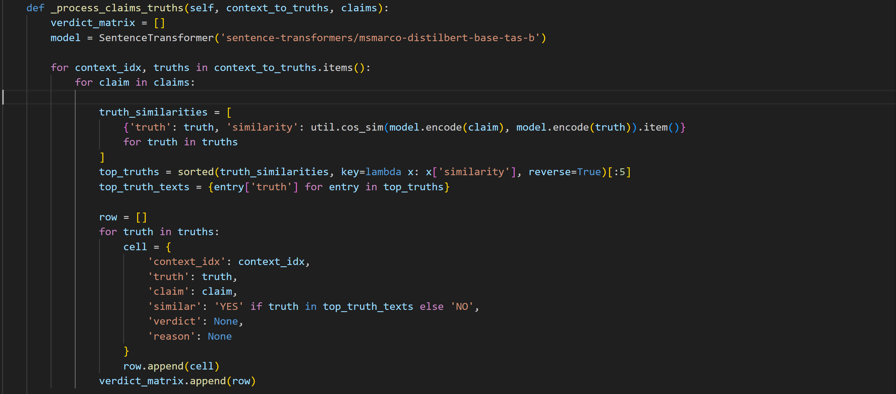
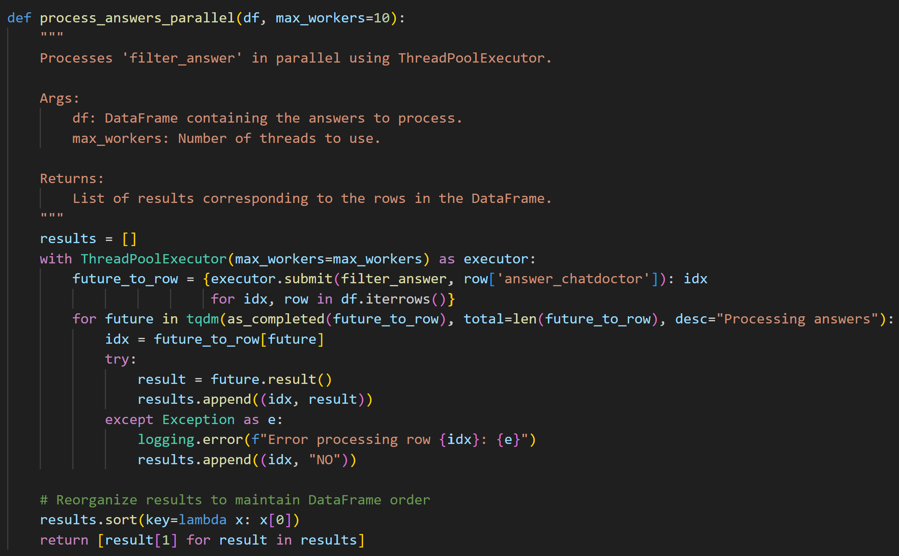

Faithfulness for Instruction Giving
A deep dive into evaluating and improving faithfulness for a Retrieval-Augmented Generation (RAG) model built for healthtech applications.
Project Overview
During my data scientist co-op for the AI Solutions Hub at the Roux, I was tasked with working on a RAG project for Evity, a healthtech company focused on leveraging world-class health research with AI to enable healthier lives. The AI Solutions Hub developed a RAG model that utilized medical papers to generate exercise regimens for customers based on their health conditions. I led the evaluation effort, specifically measuring faithfulness—how well the outputs align with the medical papers.
Initial Research and Implementation
Initially, I researched multiple pre-existing evaluation frameworks by reading over 15 papers on RAG evaluation and reviewing documentation. I chose DeepEval for several reasons:
- DeepEval compares individual RAG output statements (claims) with relevant medical paper statements (truths), providing transparency for each claim-truth pair.
- It labels claim-truth pairs as "supported," "not supported," or "no evidence," avoiding binary choices.
- It is compatible with AWS Bedrock prompting methods.
- It fact-checks against the LLM's pre-trained knowledge, which contradicts faithfulness as adherence to retrieval context.
- It relies on LLMs to decide "support," less effective for instruction-giving models where entailment matters more.
- It struggles to compare imperative RAG outputs to declarative medical paper sentences.
Custom Evaluation Framework
To address these issues, I built a custom evaluation framework tailored to instruction-giving RAG models. Key innovations include:
- Breaking down complex instructions into atomic, contextualized units.
- Using entailment checks instead of "support" assessments.
- Evaluating claims strictly within retrieval context, regardless of factual consistency.
- Creating a matrix to examine each claim-truth pair.
- Enhancing efficiency by comparing each claim only to the top 5 truths with the highest cosine similarity.
Current Work
My supervisor and I are co-authoring an 11-page paper sharing our techniques for improving faithfulness evaluation for instruction-giving LLMs. This involves running tests with multiple LLMs (Claude, ChatGPT, Llama, and others), creating a synthetic dataset, and effectively communicating complex technical concepts.
Image Gallery

Using cosine similarity as a means to filter the evaluation process.

Optimizing processing speed by ~30% by using threadpool.